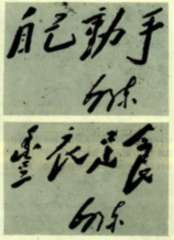
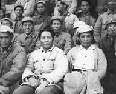
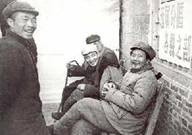
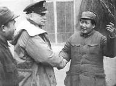
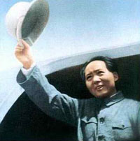
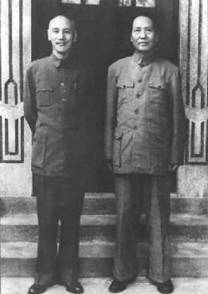
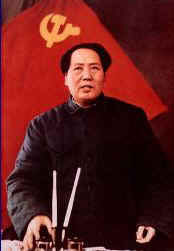
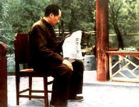
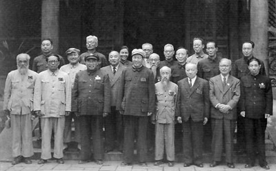
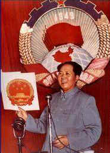

1941年
1月上旬，皖南事变发生。
1月20日，为中共中央军委起草重建新四军军部的命令，并对新华社记者发表关于皖南事变的谈话，严正提出解决皖南事变的十二条办法。
5月1日，审阅改写的经中共中央政治局批准的《陕甘宁边区施政纲领》发布，规定边区政权建设贯彻“三三制”原则。
5月8日，起草《关于打退第二次反共高潮的总结》的党内指示，提出“以打对打，以拉对拉”和争取中间派的策略思想。
5月19日，在延安干部会上作《改造我们的学习》的报告，提出反对主观主义，阐明实事求是的思想原则。
8月1日，为中共中央起草《关于调查研究的决定》。
9月10日至10月22日，出席中共中央政治局扩大会议，作反对主观主义和宗派主义的报告。
9月26日，中共中央做出《关于高级学习组的决定》，成立以毛泽东为组长的中央学习组。
秋冬，先后主持编辑《六大以来》、《六大以前》和《两条路线》等党的历史文献集。
 |
1942年5月，与参加延安文艺座谈会的代表 |
1942年
2月1日，在中共中央党校开学典礼上作《整顿党的作风》的报告。
2月8日，在中共中央宣传部召集的干部会议上作《反对党八股》的讲话。
5月，在延安文艺工作者座谈会上发表讲话并作结论。
9月7日，为延安《解放日报》撰写社论，论述精兵简政是一个极其重要的政策。
12月，向中共中央西北局高干会议提交《经济问题与财政问题》长篇书面报告，论述“发展经济，保障供给”的财经工作总方针。
1943年
 |
1943年12月9日，毛泽东和陈云、林伯渠
参观陕甘宁边区第三届生产展览会。 |
3月20日，在中共中央政治局会议上被推定为中央政治局主席和中央书记处主席。
5月26日，在中共中央书记处召开的干部大会上作《关于共产国际解散问题的报告》。
6月1日，为中共中央起草关于领导方法的决定。
7月1日，致信康生，指出“防奸”工作应调查研究，分清是非，教育群众，反对“逼，供，信”。
7月12日，为延安《解放日报》撰写《质问国民党》的社论，揭露国民党顽固派企图进攻陕甘宁边区的阴谋。
9月上旬至10月上旬，主持中共中央政治局在这一期间召开的会议，批评王明在十年内战时期的“左”倾冒险主义错误和抗战初期的右倾机会主义错误，在会上多次发言并作小结。
12月，为中央党校大礼堂落成题词“实事求是”。
 |
1944年11月，毛泽东、朱德在延安会见
美国总统罗斯福的私人代表赫尔利。 |
1944年
4月12日和5月20日，先后在中共中央西北局高干会议和中央党校第一部作关于学习和时局的讲演。
5月15日，通过在西安同国民党代表谈判的林伯渠，提出由他起草的作为谈判具体内容的意见书。意见书就关于全国政治和两党悬案问题，提出二十条意见。
5月21日，在中共扩大的六届七中全会上被推举为中央委员会主席和七中全会主席团主席。
6月5日，起草的《中共中央关于城市工作的指示》在中共六届七中全会讨论通过。
6月至8月，多次会见中外记者西北参观团成员和驻延安美军观察组成员，阐述中国共产党的抗日政策和国共关系等问题。
9月8日，在张思德追悼会上发表《为人民服务》的讲话。
10月31日，主持中共六届七中全会主席团会议，决定派王震、王首道率部南下，“以衡山为中心建立根据地”。
11月，和周恩来等同美国总统罗斯福的私人代表赫尔利多次会谈国共关系，并达成五条协定草案。这个协定草案被蒋介石拒绝。
 |
挥手之间——赴重庆谈判前同欢送的延安军民告别 |
1945年
4月20日，出席中共六届七中全会最后一次会议，会议基本通过经毛泽东多次作重要修改的《关于若干历史问题的决议》。
4月23日至6月11日，主持召开中国共产党第七次全国代表大会，致开幕词（《两个中国之命运》）和闭幕词（《愚公移山》），向大会提交《论联合政府》
 |
1945年8月，毛泽东和蒋介石在重庆合影。经过四十三天艰苦谈判，国共双方代表于10月10日签署《政府与中共代表会谈纪要》（《双十协定》） |
书面政治报告。大会确定以毛泽东思想作为全党一切工作的指针。
6月19日，在中共七届一中全会上当选为中央委员会主席。
7月，同国民参政员褚辅成、黄炎培等六人就国共关系进行会谈。谈到通过民主“新路”，跳出政党、团体兴亡“周期律”问题。
8月9日，发表《对日寇的最后一战》的声明。
8月13日，发表《抗日战争胜利后的时局和我们的方针》的讲演，提出对国民党实行针锋相对、寸土必争的方针，争取国内的和平与民主。
8月28日，赴重庆同蒋介石进行和平谈判。
9月2日，日本政府正式签署投降书。中国抗日战争胜利结束。
10月10日，《国民政府与中共代表会谈纪要》（简称《双十协定》）在重庆签署。11日，回到延安。
10月17日，在延安干部会上作关于重庆谈判的报告，指出中国革命“前途是光明的，道路是曲折的”。
12月28日，起草《建立巩固的东北根据地》的指示。
1946年
4月，撰写《关于目前国际形势的几点估计》。
6月26日，国民党军大举进攻中原解放区，全面内战爆发。
7月4日，做出南线野战军“先在内线打几个胜仗再转至外线”的战略决策。
7月20日，起草《以自卫战争粉碎蒋介石的进攻》的党内指示。
8月6日，会见美国记者斯特朗，提出“一切反动派都是纸老虎”的著名论断。
9月16日，为中共中央军委起草《集中优势兵力，各个歼灭敌人》的指示。
10月1日，为中共中央起草党内指示，总结三个月战争的经验。
11月18日，在为中共中央起草的党内指示中，第一次使用“人民解放战争”的名称。
1947年
3月18日，率中共中央机关和人民解放军总部撤离延安，开始历时一年的陕北转战。
3月至8月，领导西北野战军先后取得青化砭、羊马河、蟠龙、沙家店战役的胜利，粉碎了国民党对陕北解放区的重点进攻。
7月21日至23日，在陕北靖边县小河村主持召开中共中央会议，提出对蒋介石的斗争用五年时间（从1946年7月算起）解决的设想。在此前后，部署刘邓、陈粟、陈谢三路大军渡过黄河，转入战略进攻。
10月，起草《中国人民解放军宣言》，提出“打倒蒋介石，解放全中国”的口号。
11月，将1933年起草的《怎样划分阶级》和《关于土地斗争中一些问题的决定》重新印发给全党，以指导解放区土改运动正确发展。
 |
1949年3月在中共七届
二中全会上做报告 |
12月25日至28日，在陕北米脂县杨家沟主持召开中共中央会议（即十二月会议），向会议提交《目前形势和我们的任务》的书面报告，提出了十大军事原则和新民主主义的三大经济纲领。
1948年
1月18日，为中共中央起草《关于目前党的政策中的几个重要问题》的决定草案。
3月23日，结束陕北转战，东渡黄河，前往华北解放区。
4月1日，在山西兴县蔡家崖晋绥干部会议上发表重要讲话，阐明党的新民主主义革命总路线和土地改革总路线。
4月30日至5月7日，在河北阜平县城南庄主持召开中共中央书记处扩大会议，提出把战争引向国民党统治区、发展生产、加强纪律性等几点意见。
5月1日，致信李济深、沈钧儒，提出成立民主联合政府，宜先行召开新的政治协商会议。
 |
1949年4月下旬，毛泽东在北平
香山双清别墅看解放南京的捷报 |
5月27日，到达中共中央工委所在地河北平山县西柏坡村。
9月8日至13日，在西柏坡主持召开中共中央政治局会议，作关于战争、建国、财经等问题的重要报告。
9月至次年1月，组织指挥辽沈、淮海、平津三大战略决战，将国民党军主力聚歼在长江以北。
12月30日，为新华社写一九四九年新年献词《将革命进行到底》。
1949年
3月，主持召开中共七届二中全会，提出实现党的工作重心转移、夺取全国胜利以及关于新中国建设的指导方针和基本政策。
3月25日，率中共中央机关和人民解放军总部进驻北平。
4月21日，在南京政府拒绝接受《国内和平协定》的情况下，和朱德联名发布《向全国进军的命令》。
4月23日，人民解放军占领南京，做诗《七律·人民解放军占领南京》。
6月15日至19日，出席新政协筹备会议第一次全体会议，并在开幕式上讲话。
 |
1949年7月5日，毛泽东和新政治协商会议筹备会常务委员合影。一排左起，谭平山、章伯钧、朱德、毛泽东、沈钧儒、李济深、陈嘉庚、沈雁冰；二排左起，黄炎培、马寅初、陈叔通、郭沫若、蔡廷锴、乌兰夫；三排左起，周恩来、林伯渠、蔡畅、张奚若、马叙伦、李立三。 |
6月30日，发表《论人民民主专政》一文。
7月4日，复电程潜，对程提出的反蒋反桂及和平解决湖南问题之方针，给予赞许，并对有关事宜作出安排。
9月21日至30日，出席中国人民政治协商会议第一届全体会议，致开幕词，当选中央人民政府主席。会议通过了由周恩来主持起草、经他多次审阅修改的《共同纲领》。
10月1日，中华人民共和国成立，主持开国大典。
12月5日，颁发《关于一九五○年军队参加生产建设工作的指示》。
12月16日，抵达莫斯科，首次访问苏联。1950年2月14日，中苏签署《中苏友好同盟互助条约》。
12月至翌年初，对和平解放西藏作出具体部署。
 |
1950年，毛泽东在政协
一届二次会议上 |
1950年
6月6日至9日，主持召开中共七届三中全会，提交《为争取国家财政经济状况的基本好转而斗争》的书面报告，并作《不要四面出击》的讲话。
6月28日，主持召开中央人民政府委员会第八次会议，通过《中华人民共和国土地改革法》。
10月上旬，主持中共中央政治局会议，作出“抗美援朝，保家卫国”的决策。
10月8日，发布组成中国人民志愿军的命令，命令志愿军迅即向朝鲜境内出动，援助朝鲜人民，并任命彭德怀为志愿军司令员兼政治委员。随后亲自指导了第一次至第三次战役。
|